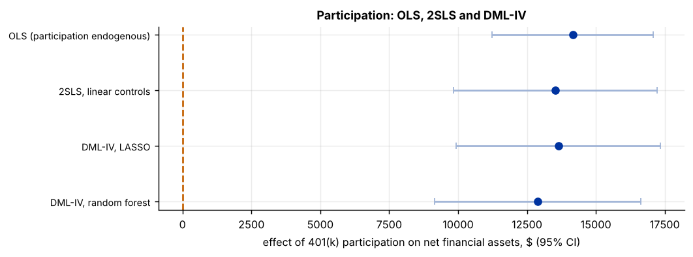

Step 1The question and the model
What is the effect of actually participating in a 401(k) plan on a household's financial assets? Participation is a choice: households that save a lot anyway are more likely to join, so comparing participants with non-participants, even with controls, overstates the effect. Eligibility is a natural instrument. It is set by the employer, so (following Poterba, Venti and Wise) it is as good as random given income and the other controls; it strongly shifts participation, because only eligible workers can participate; and it plausibly affects assets only through participation.
The partially linear IV model is
with \(D\) participation, \(Z\) eligibility and \(X\) the controls. DML-IV predicts \(Y\), \(D\) and \(Z\) from \(X\) by cross-fitted machine learning, and then runs IV on the residuals: \(\hat\theta = \sum \tilde Z_i \tilde Y_i / \sum \tilde Z_i \tilde D_i\).
Whose effect is this?
With a binary instrument and heterogeneous effects, IV estimates the effect for compliers, the households who participate because they are eligible (a local average treatment effect; Imbens and Angrist 1994). Here non-eligible households cannot participate at all (one-sided non-compliance), so the compliers are all participants and \(\theta\) is the average effect of participation on the participants.
Step 2Load the data and confirm the starting point
import numpy as np
import pandas as pd
import statsmodels.api as sm
df = pd.read_csv("k401_iv.csv")
y, d, z = "net_tfa", "p401", "e401"
X = [c for c in df.columns if c not in (y, d, z)]
print(f"N = {len(df)} households, {len(X)} controls")
print(pd.crosstab(df[z].map({0: "not eligible", 1: "eligible"}), df[d].map({0: "not participating", 1: "participating"})))
print(f"participation rate among the eligible: {df.loc[df[z] == 1, d].mean():.1%}")
ols = sm.OLS(df[y], sm.add_constant(df[[d] + X])).fit(cov_type="HC1")
print(f"\nOLS of assets on participation, with controls: {ols.params[d]:,.0f} (s.e. {ols.bse[d]:,.0f})")N = 9915 households, 12 controls p401 not participating participating e401 eligible 1088 2594 not eligible 6233 0 participation rate among the eligible: 70.5% OLS of assets on participation, with controls: 14,159 (s.e. 1,496)
Nobody who is ineligible participates, and 70.5 % of the eligible do. OLS gives a large effect of participation, but it compares savers who chose to participate with households that did not.
Step 3The first stage
An instrument must move the treatment. The first-stage regression of participation on eligibility and the controls tells how strongly; the selection tool requires an F statistic of at least 10 (Rule B3).
fs = sm.OLS(df[d], sm.add_constant(df[[z] + X])).fit(cov_type="HC1")
F = (fs.params[z] / fs.bse[z]) ** 2
print(f"first stage: coefficient on eligibility {fs.params[z]:.3f} (s.e. {fs.bse[z]:.4f}); F = {F:,.0f}")first stage: coefficient on eligibility 0.695 (s.e. 0.0080); F = 7,619
The instrument is extremely strong: eligibility raises the probability of participating by 70 percentage points (F ≈ 7,600). Weak-instrument problems do not arise here. When the F statistic is close to or below 10, report Anderson–Rubin confidence intervals, which stay valid however weak the instrument is.
Step 4A linear benchmark: 2SLS
from linearmodels.iv import IV2SLS
iv = IV2SLS(df[y], sm.add_constant(df[X]), df[d], df[z]).fit(cov_type="robust")
print(f"2SLS with linear controls: {iv.params[d]:,.0f} (s.e. {iv.std_errors[d]:,.0f})")2SLS with linear controls: 13,526 (s.e. 1,885)
2SLS is the standard estimator, but it controls for \(X\) linearly. With income entering wealth and participation in a strongly nonlinear way, a linear adjustment may leave confounding behind. DML-IV relaxes that.
Step 5DML-IV with DoubleML
Three nuisance functions are cross-fitted: \(\ell(X) = E[Y \mid X]\) (ml_l), \(m(X) = E[Z \mid X]\) (ml_m) and \(r(X) = E[D \mid X]\) (ml_r).
import doubleml as dml
from sklearn.pipeline import make_pipeline
from sklearn.preprocessing import StandardScaler
from sklearn.linear_model import LassoCV
from sklearn.ensemble import RandomForestRegressor
data = dml.DoubleMLData(df, y_col=y, d_cols=d, x_cols=X, z_cols=z)
learners = {"LASSO": make_pipeline(StandardScaler(), LassoCV(cv=5, random_state=0, max_iter=20000)),
"random forest": RandomForestRegressor(n_estimators=300, min_samples_leaf=10, max_features=.5, random_state=0, n_jobs=-1)}
fits = {}
for name, ml in learners.items():
np.random.seed(0)
fits[name] = dml.DoubleMLPLIV(data, ml_l=ml, ml_m=ml, ml_r=ml, n_folds=5, n_rep=3).fit()
s = fits[name].summary
print(f"DML-IV, {name:13s}: {fits[name].coef[0]:9,.0f} s.e. {fits[name].se[0]:7,.0f} 95% CI [{s['2.5 %'].iloc[0]:,.0f}, {s['97.5 %'].iloc[0]:,.0f}]")DML-IV, LASSO : 13,641 s.e. 1,893 95% CI [9,930, 17,352] DML-IV, random forest: 12,880 s.e. 1,910 95% CI [9,137, 16,622]
Step 6Compare the estimates
rows = {"OLS (participation endogenous)": (ols.params[d], ols.bse[d]), "2SLS, linear controls": (iv.params[d], iv.std_errors[d])}
rows.update({f"DML-IV, {k}": (f.coef[0], f.se[0]) for k, f in fits.items()})
tab = pd.DataFrame(rows, index=["effect", "s.e."]).T.round(0)
print(tab)
gap = abs(fits["LASSO"].coef[0] - fits["random forest"].coef[0]) / max(f.se[0] for f in fits.values())
print(f"\nLASSO and forest learners differ by {gap:.2f} standard errors")
import matplotlib.pyplot as plt
fig, ax = plt.subplots(figsize=(8, 2.8))
yy = np.arange(len(tab))[::-1]
ax.errorbar(tab["effect"], yy, xerr=1.96 * tab["s.e."], fmt="o", color="#0033a0", ecolor="#9fb3d6", capsize=3)
ax.set_yticks(yy); ax.set_yticklabels(tab.index, fontsize=8); ax.axvline(0, color="#c46000", ls="--")
ax.set_xlabel("effect of 401(k) participation on net financial assets, $ (95% CI)"); ax.set_title("Participation: OLS, 2SLS and DML-IV")effect s.e. OLS (participation endogenous) 14159.0 1496.0 2SLS, linear controls 13526.0 1885.0 DML-IV, LASSO 13641.0 1893.0 DML-IV, random forest 12880.0 1910.0 LASSO and forest learners differ by 0.40 standard errors

Step 7Reading the result: the intention-to-treat and the Wald ratio
With one binary instrument, the IV estimate is the effect of eligibility on assets (the intention-to-treat, ITT) divided by the effect of eligibility on participation (the first stage). Seeing the two pieces makes the result transparent:
itt = sm.OLS(df[y], sm.add_constant(df[[z] + X])).fit(cov_type="HC1").params[z]
print(f"ITT (eligibility on assets, linear controls): {itt:,.0f}")
print(f"first stage: {fs.params[z]:.3f}")
print(f"Wald ratio ITT / first stage: {itt / fs.params[z]:,.0f} (= 2SLS with the same controls)")ITT (eligibility on assets, linear controls): 9,396 first stage: 0.695 Wald ratio ITT / first stage: 13,526 (= 2SLS with the same controls)
Step 8Write it up
How to write it: method and results
Participation in a 401(k) is chosen by households and is therefore endogenous. We instrument it with eligibility, which is determined by employers and, following Poterba, Venti and Wise, is as good as random conditional on income, age, education and family characteristics. The first stage is very strong (eligibility raises participation by about 70 percentage points; F in the thousands). We estimate the partially linear IV model by double machine learning (Chernozhukov et al. 2018), with LASSO and random-forest learners, five-fold cross-fitting and three repetitions. Participation raises net financial assets by about 13,000 dollars among participants (13,641 with LASSO and 12,880 with random forests; standard errors about 1,900), close to linear 2SLS (13,526) and somewhat below OLS (14,159), which is biased upwards by the self-selection of savers into participation (Table X). The two learners differ by 0.4 standard errors.
Checklist for the paper
- Argue relevance, exclusion and as-good-as-random assignment of the instrument.
- Report the first stage and its F statistic; use Anderson–Rubin intervals if it is weak.
- State whose effect IV identifies (compliers; here, participants).
- Show DML-IV with two learners next to OLS and 2SLS.
- Report folds, repetitions and the learners for all three nuisance functions.